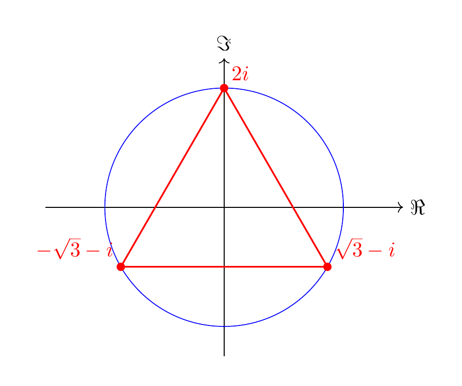

Solutions
Solution 1.1
(See Exercise 1.4.) We have \(\frac{i-1}{i+1} = \frac{(i-1)\overline{i+1}}{|i+1|^2} = \frac{(i-1)(1-i)}{2} = i\). Thus \(z=i^3 = -i\) is the algebraic form. We have \(|z|=1\) and \({\mathrm {arg}} z = \frac 32 \pi\), so
Solution 1.2
(See Exercise 1.5.) In order to solve
we would like to divide by \(z\). This is only possible if \(z \ne 0\), so we first consider the case \(z = 0\). In this case both sides of the equation are equal to 0, so \(z=0\) is indeed a solution. Now, we consider \(z \ne 0\) and divide the above equation by \(z\) and obtain
There are different ways to solve this equation. One may put \(z = a+ib\) and solve the resulting quadratic equation. For illustrational purposes, we rather consider the trigonometric form \(z = r (\cos \alpha + i \sin \alpha)\). Then \(\overline z = r (\cos \alpha - i \sin \alpha) = r (\cos (-\alpha) + i \sin (-\alpha))\), and
Note that \(r = |z| \ne 0\), so we can cancel this in the right-hand fraction. We have
We then obtain
This implies \(r = \frac 13\). Concerning the arguments, we have to be more careful: the above equation is equivalent to saying that
cf. around Equation (1.6). There are two solutions: \(-2 \alpha = \frac 32 \pi\) or \(- 2\alpha = \frac 32 \pi + 2 \pi\). The former yields \(\alpha = -\frac 34 \pi\), the latter \(\alpha = \frac \pi 4\). (Of course, we can now add integer multiples of \(2\pi\) to these values of \(\alpha\), so \(\alpha = \frac 54 \pi\) is another solution. However, this gives the same value for \(z\).) The resulting solutions are
and
To sum up, the above equation has three solutions, \(z = 0\) and these two solutions.
Solution 1.3
(See Exercise 1.6.) There are three solutions, namely
Here is a picture:
